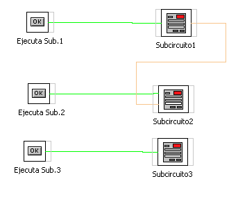
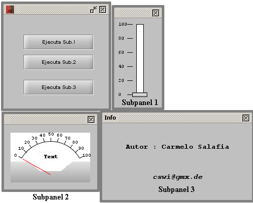
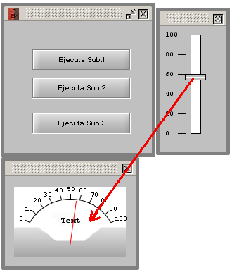
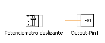
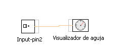

Panel
de Visualización
Panel
de VisualizaciónELEMENTO: SUBPANEL
Con este objeto podemos invocar la apertura de una aplicacion (subcircuito). Cada una de las entradas y salidas de estos subcircuitos aperceran en ellos y podran conectarse con otros bloques operadores y/o subcircuitos..
En el ejemplo cada boton invoca a un subcircuito.
| Panel de Circuito | Panel
de Visualización |
|  |  Al variar en el cursor se mueve la aguja |
| Circuito del Subpanel 1 | Circuito del Subpanl 2 |
Es importante que en los subpaneles las entradas y las salidad se unan a pines de entrada y pines de salida (Output-Pin e Input-Pin)